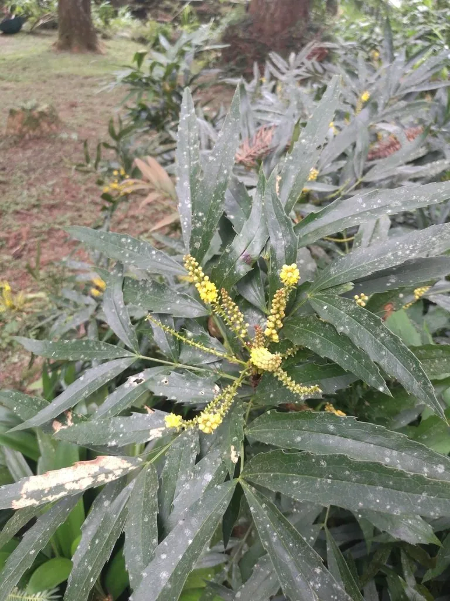

灌木与花木 · 植物界
十大功劳 Mahonia fortunei

小檗科常绿灌木，羽状复叶硬挺带刺，秋季开黄花、冬季结蓝紫果，四季常青，全株入药，名字源于药用广泛。
- 分类
- 门被子植物门纲木兰纲目毛茛目科小檗科属十大功劳属
- 栖息环境
- 海拔 1500 米以下的山坡林下、灌丛与沟谷，喜温暖湿润、耐阴
- 地理分布
- 中国四川、湖北、浙江、江西、江苏、湖南等地；日本有分布
- 保护级别
- 暂无评估；中国未列入国家重点保护野生植物名录
物种志
十大功劳为小檗科十大功劳属常绿灌木，高 1–2 米，茎直立，树皮灰褐色。奇数羽状复叶，小叶 5–9 枚，狭披针形，革质，边缘具刺齿，表面深绿有光泽。花黄色，组成顶生的总状花序，花期 7–9 月；浆果卵形，成熟时蓝紫色并被白粉，果期 10–12 月。
十大功劳原产中国四川、湖北、浙江、江西等地，生于山坡林下与灌丛，日本也有分布。它喜光，也耐阴，喜温暖湿润，适宜疏松肥沃、排水良好的土壤。全株含小檗碱，根、茎、叶均可入药，有清热燥湿、泻火解毒之效，因用途广泛而得名“十大功劳”。叶形秀丽、叶色常绿，也常植于庭院、花境与林下作观赏，或制作盆景。
形态与习性
- 株高1–2 m，茎直立、树皮灰褐色
- 花期7–9 月，黄色总状花序
- 果期10–12 月，浆果蓝紫色、被白粉
- 光照喜光，也耐阴
- 水分喜湿润，忌积水
- 土壤疏松肥沃、排水良好的壤土
- 主要用途根茎叶入药，庭院与林下观赏、盆景
趣味知识
- “十大功劳”之名源于其全株均可入药，用途广泛。
- 羽状复叶的小叶边缘有硬刺，触碰时需小心。
- 蓝紫色的果实表面覆盖一层白色蜡粉，冬季十分醒目。
- 十大功劳属植物因叶形似猫爪，民间也称“猫儿刺”。